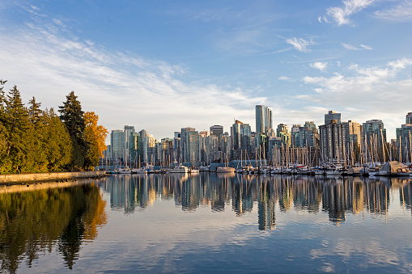

In the past, technology hubs were limited to a few notable cities such as London, New York, and of course, Silicon Valley. However, things have changed.
In many ways, the global Covid-19 pandemic has levelled the playing field. Thanks to the rise in remote working, investors (and employees) are now motivated to branch out, explore new cities, and make the most of emerging tech hotspots. Vancouver is a natural fit. During 2019 and 2020, the Canadian city added 12,900 tech jobs, even in the middle of a major global pandemic. According to the Daily Hive, this was the third largest in North America, behind only Toronto and Seattle. In fact, the city has earned the nickname Techvouver in the last few years – but why is it so popular?
For starters, the city is home to several world-class universities, such as the University of British Columbia, University Canada West, and Vancouver City University. These attract top talent from across the globe. On top of that, Vancouver has numerous talent incubators which help develop an innovative and multi-cultural workforce.
The ‘Couve is also a great place for companies to do business. British Columbia’s general corporate income tax is just 27 per cent, and the region has the lowest personal income taxes in Canada.
When all these factors are combined with a nice climate, amazing recreational activities, friendly communities, and wonderful scenery, it’s no surprise that the tech sector in BC is booming. If you’re thinking about moving to Vancouver, take a look at our guide first.
Software development Software development is a huge industry in Vancouver, especially game development. The city is home to lots of big name companies such as Capcom Game Studio, Black Tusk Studios (Microsoft), and Electronic Arts Canada.
Also known as EA Games, Electronic Arts develops and delivers games and content to over 300 million users around the world. The Vancouver office is home to some of its largest franchises, such as FIFA Soccer, NHL, UFC, and a Need for Speed. It also sounds like a pretty cool place to work with plenty of perks including basketball and volleyball courts and a large football pitch. It even has an arcade and a dry cleaner.
| Company | size | Domain |
|---|---|---|
| 1500 | Cloud | |
| Deloitte | 2000 | Consulting |
| SAP INC | 250 | Cyber Protection |

If i specifically talk about the technologies, the list is almost endless
following are some languages which are trendy in vancouver these days
Vey few people now that this city also has a great weather advantage over other cities in western Canada. There is hardly any snow throghout the year, if we compare this to Calgary or to Winnipeg, which are also developing at a very rapid pace. So its very strategically placed.
I think people should start considering the value of this amazingly located and placed city. Because, its very important for this city to find its full potential
DONT EVER FALL TRAP TO THESE TACTICS, WE ARE NOT A PAID SERVICE
EVERYTHING WE DO IS FREE FOR EVERYONE AND SPECIALY THE TECH COMMUNITY
BE ADVISED WE WONT BE RESPONSIBLE FOR ANY OF YOUR MONEY OR RESOURCES LOST IF YOU FALL TRAP TO ANY OF SUCH TACTICS